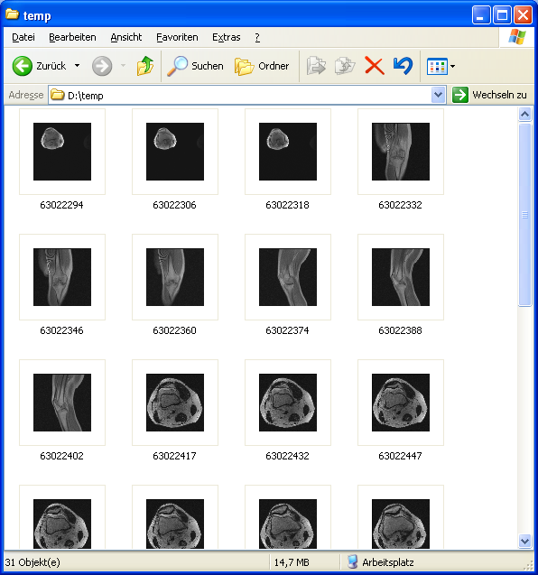
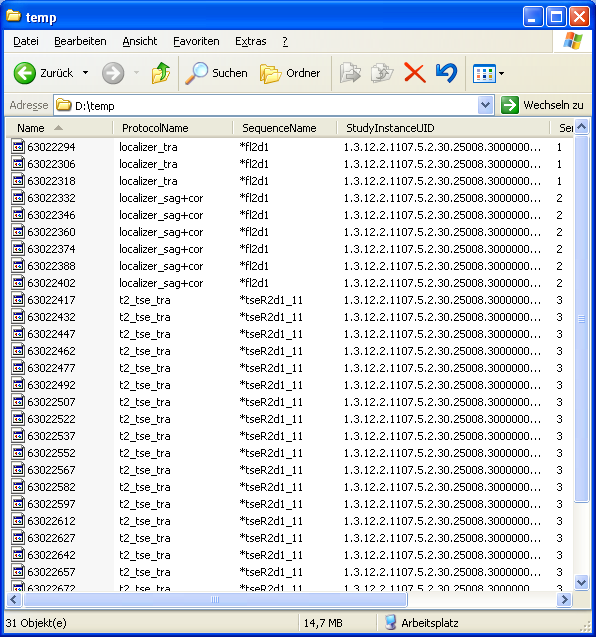

DicomShell
DicomShell is an extension for the Windows Explorer. It displays thumbnails of DICOM images in Windows Explorer. It shows
DICOM attributes in the Windows Explorer details view and in the
file information tooltip.
Conditions of Use
By using this software product, you agree to the following conditions:
THIS SOFTWARE IS MADE AVAILABLE, AS IS, AND THE AUTHOR MAKES NO WARRANTY REGARDING THE SOFTWARE, ITS PERFORMANCE, ITS MERCHANTABILITY OR FITNESS FOR ANY PARTICULAR USE, FREEDOM FROM ANY COMPUTER DISEASES OR ITS CONFORMITY TO ANY SPECIFICATION. THE ENTIRE RISK AS TO QUALITY AND PERFORMANCE OF THE SOFTWARE IS WITH THE USER.
THIS SOFTWARE IS NOT A MEDICAL DEVICE AND THEREFORE NOT PERMITTED FOR DIAGNOSTIC USE.
Copyright Information
Copyright (c) 2007, Andreas Grimme. All rights reserved.
This software and supporting documentation were developed by Andreas Grimme (andreas.grimme@gmx.net).
Check the DicomShell product home page for updates.
This product uses the OFFIS DICOM Toolkit DCMTK (C) 1993-2006, OFFIS e.V.
Usage
Thumbnails
Open a folder with DICOM files in Windows Explorer and then click Thumbnails on the View menu.

Details View Columns
Open a folder with DICOM files in Windows Explorer and then click Details on the View menu. Right-click on the column header
to select the columns to be displayed.

File Info Tooltip
DicomShell can show tooltips with important DICOM attributes. In the Explorer, choose View -> Folder Options -> View tab. Check the
option Show pop-up description (tooltip) for folder and desktop items.
Configuration
The program files folder of DicomShell (%ProgramFiles%\Andreas Grimme\DicomShell) contains the dictionary files tooltip.dic and
columns.dic. The DICOM attributes listed in these files are shown in the tooltip or are
available as details view columns. To extend the listed attributes, pick any attribute from dicom.dic
and add it to the dictionary files.